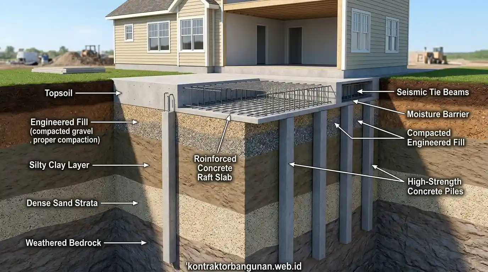

Indikator Fisik Apa Saja yang Menandakan Rumah Perlu Perombakan Total?
Kerusakan fisik beruntun yang menyerang komponen pendukung beban utama menjadi indikator utama bahwa perbaikan parsial tidak lagi memadai untuk mengamankan fisik hunian.
Untuk memastikan keselamatan penghuni dan ketahanan nilai aset properti, cermati 6 indikator teknis utama berikut:
- Keretakan Structural Pada Dinding dan Kolom: Retakan melintang berbentuk diagonal dengan lebar melebihi 3 mm mengindikasikan pergeseran pondasi atau pergerakan tanah di bawah bangunan. Retak yang tembus hingga ke sisi luar dinding menandakan hilangnya daya ikat beton bertulang penahan beban.
- Atap Melengkung dan Pelapukan Rangka Utama: Kayu kuda-kuda yang terkelupas oleh rayap atau rangka baja ringan yang keropos akibat karat berkepanjangan dapat mengakibatkan atap runtuh sewaktu-waktu saat terbebani air hujan lebat.
- Penurunan Elevasi Lantai dan Keramik Terangkat (Popping): Lantai yang tampak miring secara visual atau jubin keramik yang meletup dan retak serentak menandakan penurunan struktur bawah tanah atau hilangnya daya dukung tanah dasar (settlement).
- Kebocoran Utilitas Tersembunyi dan Jalur Listrik Usang: Pipa air bersih yang pecah di dalam coran dinding atau instalasi kabel listrik tua di atas plafon yang berpotensi memicu korsleting arus pendek dan bahaya kebakaran.
- Dinding Lembap dan Jamur Kronis: Rembesan air tanah yang naik ke dinding akibat rusaknya lapisan damp-proof course (DPC), menyebabkan pasangan bata hancur berpasir dan plesteran dinding rontok secara berkelanjutan.
- Perubahan Fungsi dan Kebutuhan Ruang yang Masif: Denah tata ruang lama dengan pencahayaan dan sirkulasi udara minim yang tidak lagi mampu menampung penambahan anggota keluarga, kebutuhan ruang kerja (work from home), atau aktivitas bisnis rumahan.
| Karakteristik Kerusakan | Retak Rambut (Perbaikan Ringan) | Retak Struktural (Wajib Renovasi Total) |
|---|---|---|
| Lebar Celah Retakan | Kurang dari 1 mm | Lebih dari 3 mm s/d 10 mm+ |
| Pola dan Arah Retak | Acak, tipis seperti jaring laba-laba | Diagonal 45 derajat, vertikal tembus balok |
| Kedalaman Kerusakan | Hanya pada plesteran & lapisan cat | Menembus bata merah/hebel dan kolom cor |
| Tingkat Bahaya Bangunan | Estetika visual semata | Sangat Tinggi (Risiko keruntuhan gedung) |
Tabel panduan evaluasi perbedaan jenis retak dinding untuk menentukan tingkat urgensi perombakan hunian.

Pemeriksaan komprehensif mutu beton dan kelayakan pondasi oleh tim ahli konstruksi profesional.
Mengapa Penundaan Perbaikan Total Sangat Membahayakan Finansial Anda?
Membiarkan kerusakan struktur berlarut-larut akan melipatgandakan pengeluaran perbaikan di masa depan akibat meluasnya dampak kerusakan ke bagian fisik lainnya.
Studi kasus manajemen pemeliharaan bangunan memperlihatkan kerugian nyata akibat menunda perombakan:
- Pembengkakan Biaya Darurat: Biaya penanganan darurat pasca-keruntuhan atap atau perbaikan pondasi yang amblas jauh lebih mahal dibanding alokasi dana perombakan yang terencana sejak awal.
- Penyusutan Nilai Aset Properti: Rumah dengan kondisi struktur rusak parah mengalami penurunan harga jual kembali (resale value) hingga 35% di pasar properti, karena calon pembeli memperhitungkan biaya rekondisi berat.
- Ancaman Keselamatan Penghuni: Risiko kecelakaan fisik yang mengancam nyawa keluarga akibat runtuhan material penutup atap, plesteran plafon berat, atau dinding yang kehilangan daya tekan.
- Kerusakan Perabot & Elektronik: Rembesan air hujan akibat atap keropos merusak furnitur kayu jati, parket lantai, hingga peralatan elektronik rumah tangga.
Mengapa Kontraktor Bangunan Merupakan Solusi Terbaik Pembenahan Hunian?
Bekerja sama dengan Kontraktor Bangunan terpercaya menjamin audit struktur yang obyektif, penyusunan RAB yang terikat transparan, serta hasil akhir bangunan yang tahan lama.
Keunggulan utama memanfaatkan jasa perusahaan konstruksi legal:
- Pemeriksaan Fisik Presisi: Mengukur tingkat keretakan, elevasi kemiringan lantai, dan daya dukung pondasi menggunakan alat uji kekuatan beton (hammer test) dan pemodelan teknik sipil modern.
- Efisiensi Pengadaan Material: Mendapatkan suplai bahan bangunan berkualitas tinggi langsung dari produsen dengan standar SNI terjamin serta diskon harga proyek.
- Garansi Pemeliharaan Resmi: Menjamin ketahanan hasil pekerjaan fisik melalui penerbitan surat sertifikat garansi retensi pasca-pembangunan.
- Kepatuhan Regulasi & Izin PBG: Memastikan seluruh denah baru memenuhi syarat tata ruang, koefisien dasar bangunan, dan kelengkapan Persetujuan Bangunan Gedung (PBG).
Amankan fisik tempat tinggal keluarga Anda sebelum terjadi kerusakan fatal. Percayakan analisis teknis dan perombakan fisik hunian Anda kepada tim Kontraktor Bangunan terpercaya sekarang juga!
FAQ seputar Tanda Rumah Direnovasi Total
Kesimpulan Praktis
Memahami tanda rumah perlu direnovasi total merupakan langkah krusial untuk melindungi aset finansial dan keselamatan keluarga Anda. Dengan tindakan penanganan yang cepat dan terencana, risiko bahaya struktur bangunan dapat diatasi secara sempurna.
Siap mentransformasi rumah lama Anda menjadi hunian yang modern, aman, dan kokoh? Hubungi tim Kontraktor Bangunan kami sekarang untuk konsultasi kelayakan bangunan serta penawaran RAB presisi!